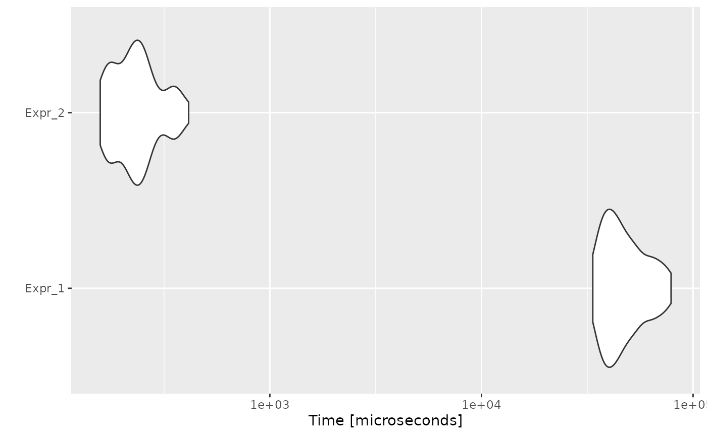

Conditional Threading is an optimization that searches for separate blocks of IF statements but with exactly the same conditions. When several conditionals present the same boolean condition, merging their inside actions would avoid computing the condition several times. Also, in the cases where a second IF statement has been used with the exact negation of the condition of the first IF, the second IF could then be incorporated in an ELSE statement.
Consider the following example:
code <- paste(
"n_evens <- 0",
"n_odds <- 0",
"odds_sum <- 0",
"evens_sum <- 0",
"",
"for (i in sample(10000, replace = TRUE)) {",
" if (i %% 2 == 1) {",
" n_odds <- n_odds + 1",
" }",
" if (i %% 2 == 1) {",
" odds_sum <- odds_sum + i",
" }",
" if (!(i %% 2 == 1)) {",
" n_evens <- n_evens + 1",
" }",
" if (!(i %% 2 == 1)) {",
" evens_sum <- evens_sum + i",
" }",
"}",
sep = "\n"
)
cat(code)## n_evens <- 0
## n_odds <- 0
## odds_sum <- 0
## evens_sum <- 0
##
## for (i in sample(10000, replace = TRUE)) {
## if (i %% 2 == 1) {
## n_odds <- n_odds + 1
## }
## if (i %% 2 == 1) {
## odds_sum <- odds_sum + i
## }
## if (!(i %% 2 == 1)) {
## n_evens <- n_evens + 1
## }
## if (!(i %% 2 == 1)) {
## evens_sum <- evens_sum + i
## }
## }Then, the automatically optimized code would be:
opt_code <- opt_cond_thread(list(code))
cat(opt_code$codes[[1]])## n_evens <- 0
## n_odds <- 0
## odds_sum <- 0
## evens_sum <- 0
## for (i in sample(10000, replace = TRUE)) {
## if(i %% 2 == 1) {
## n_odds <- n_odds + 1
## odds_sum <- odds_sum + i
## }else {
## n_evens <- n_evens + 1
## evens_sum <- evens_sum + i
## }}And if we measure the execution time of each one, and the speed-up:
bmark_res <- microbenchmark({
eval(parse(text = code))
}, {
eval(parse(text = opt_code))
})
autoplot(bmark_res)
speed_up(bmark_res)## Min. 1st Qu. Median Mean 3rd Qu. Max.
## Expr_2 212.6976 206.8032 195.1441 201.1962 210.8124 190.4774The opt-cond-thread optimizer simply looks for IF statements in the code snippet given as the input and if it finds an IF statement, it checks the immediate next block of code. If it is another IF statement, the optimizer merges the two IF blocks if the IF conditions were same or converts the second IF statement to ELSE if the conditions were negation of each other.